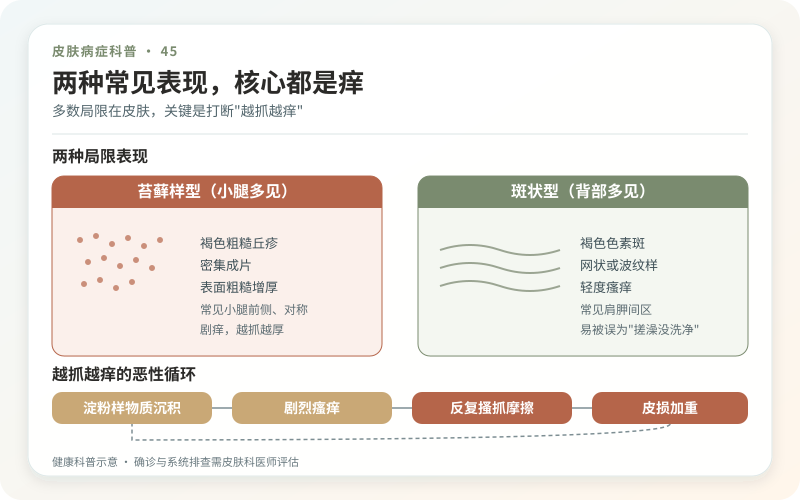
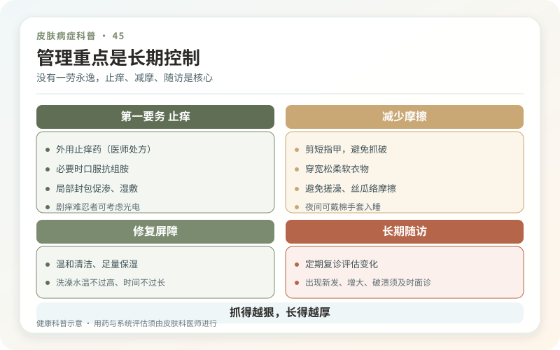

皮肤淀粉样变的名字很容易让人联想到“全身器官淀粉样变”。事实上，原发性局限性皮肤淀粉样变主要发生在皮肤，常见苔藓型和斑状型：苔藓型多在小腿伸侧出现密集、粗糙、褐色小丘疹，痒得厉害；斑状型常在上背出现灰褐色、波纹样斑。
这里的淀粉样物质是异常蛋白沉积。常见苔藓型、斑状型通常不等于内脏也有病，更不是吃淀粉吃出来的。反复搓澡、抓挠和摩擦可能损伤表皮细胞，参与沉积和瘙痒循环。

先确认是哪一型，别把所有褐色痒疹都算进去
慢性湿疹、神经性皮炎、结节性痒疹、肥厚性扁平苔藓和色素沉着都可能相似。皮肤科根据分布、触感和皮肤镜判断，常需皮肤活检并用特殊染色确认淀粉样沉积。
少见的结节型皮肤淀粉样变可形成粉红、红褐或蜡样结节，与其他类型的细胞来源和系统关联不同，医生可能建议血液、尿液等评估。不要看到“皮肤淀粉样变”五个字就自行做全套肿瘤检查，也不要忽略医生对结节型的进一步建议。

治疗为什么常常慢？
目前没有一个适用于所有人的根治方案。常用目标是减少瘙痒、让丘疹变平、阻止新抓痕。医生可能选择外用糖皮质激素、维生素D类似物、钙调神经磷酸酶抑制剂、封包、光疗或系统止痒药；顽固局限皮损有时讨论激光、磨削等。
不同疗法证据和反应差异较大，停止后也可能复发。任何宣称“一次排出淀粉样物质”的操作，都误解了沉积位置和慢性过程。
家庭护理的关键是减少摩擦
停止用搓澡巾、粗盐、刷子和热水反复刺激，洗后及时涂厚实、无香保湿剂。指甲剪短，痒时用冷敷、按压替代抓挠；衣物选择柔软面料，减少裤腿和护具摩擦小腿。
褐色不会在不痒的当天立刻消退。先看新疹是否减少、夜间是否少醒、丘疹是否变软，再看颜色。防晒可减少色差加深，但不需要把小腿全年密封。
哪些变化要尽快复诊？
皮损突然形成结节、破溃出血、范围快速扩大，或伴体重下降、乏力、骨痛等全身症状，应重新评估。长期瘙痒影响睡眠和情绪，也值得升级治疗，而不是被一句“别抓就行”打发。
外用强效激素不能无限期大面积使用，封包还会增加吸收；具体强度和间歇方式要按医嘱。草药膏、精油和偏方可能造成接触性皮炎，让色素更深。
皮肤淀粉样变的管理重点不是把名字想得多可怕，而是确认类型、降低瘙痒和摩擦，守住生活质量。
先确认讨论的是“局限皮肤型”
皮肤淀粉样变可表现为小腿或背部长期瘙痒、褐色丘疹或斑片，但湿疹、神经性皮炎和其他色素病也可能相似。医生会结合分布、触感和皮肤镜判断，必要时活检。皮肤中出现淀粉样物质，并不自动等于全身器官受累；是否需要系统检查取决于亚型、病史和异常症状，不能被“淀粉样变”四个字直接推导成重病。
摩擦往往是病程的放大器
热水烫洗、搓澡巾、抓痒器和反复摩擦会让局部更厚、更痒、更深，形成慢性循环。连续两周记录最痒时段和抓挠场景，用冷敷、保湿、柔软衣物与替代动作降低机械刺激。色素通常比瘙痒消退更慢；治疗后先看夜间痒、抓痕和新丘疹是否减少，不要因颜色尚未退就不断加强刺激性“祛黑”。
治疗目标是控制，而非承诺根除
外用抗炎、止痒药、光疗或其他治疗需根据范围和病程选择，顽固病例可能需要多种手段。任何方案都要同时计算复发、长期依从性和色素风险。若皮疹突然改变、破溃出血，或伴不明原因体重下降、水肿、气促等系统症状，应重新就医，不要把新问题都归为旧病。可控的痒和可接受的外观，是更现实的长期终点。
不要用“磨掉黑色”证明治疗积极
慢性抓挠留下的色沉和角化需要时间恢复，强酸、磨砂和高能量光电可能再次诱发炎症。若外观是主要困扰，先等瘙痒稳定，再评估色素方案；活动期边抓边做美白，常是两股力量互相抵消。每月比较一次照片即可，把睡眠和抓挠次数放在颜色之前。
家人能做的不是提醒“别抓”，而是一起减少高温洗浴、准备保湿和改善睡眠环境。若患者需要不断解释皮肤颜色，可用“慢性皮肤炎症留下的改变，不传染”回应。降低羞耻和抓挠压力，也是在处理病程，而不是额外的心理鸡汤。